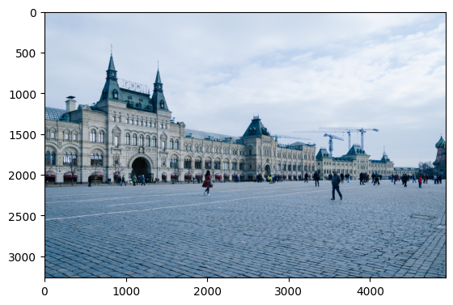
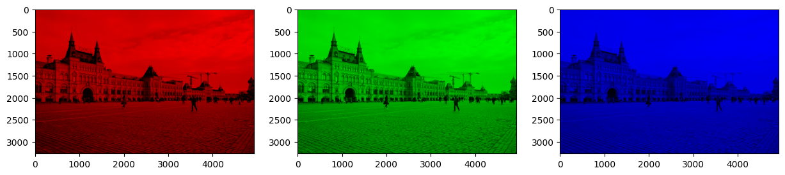
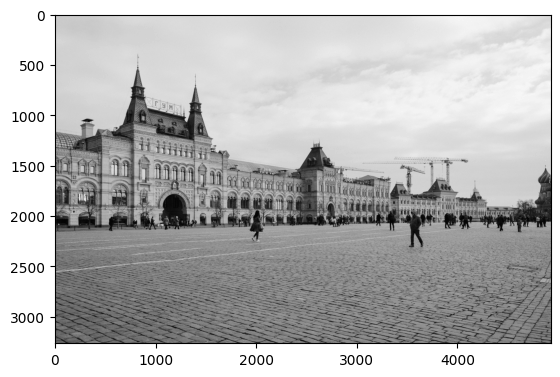
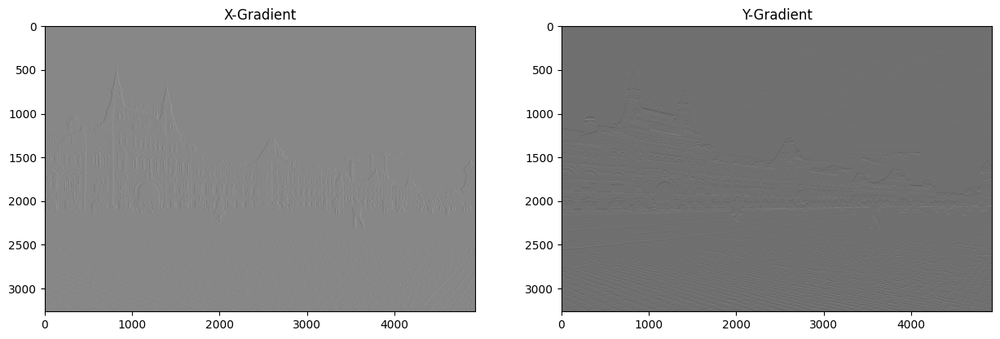
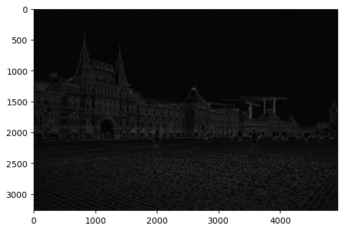
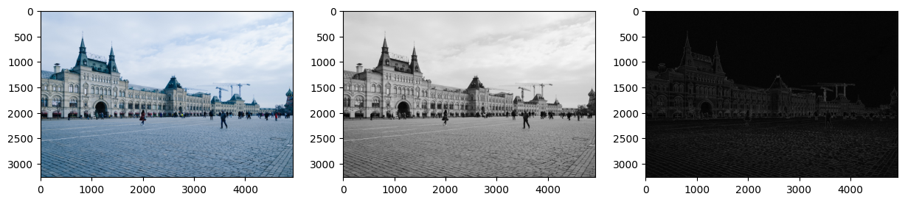
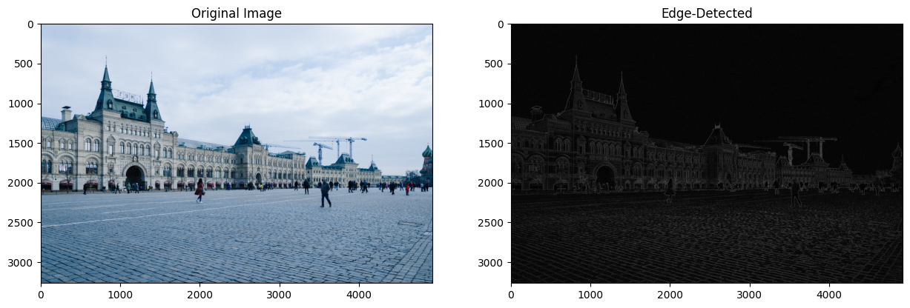

import numpy as np
import matplotlib.pyplot as plt2D Convolution
img = plt.imread("Image.jpeg")
Nx, Ny, Nz = np.shape(img)
print(f"Height: {Nx}, Width: {Ny}, RGB: {Nz}")
plt.imshow(img)
plt.show()Height: 3264, Width: 4928, RGB: 3
print(img)[[[182 202 227]
[172 192 217]
[174 194 219]
...
[216 229 246]
[206 219 236]
[196 209 226]]
[[189 209 234]
[179 199 224]
[179 199 224]
...
[213 226 243]
[211 224 241]
[210 223 240]]
[[191 211 236]
[182 202 227]
[180 200 225]
...
[208 221 238]
[214 227 244]
[219 232 249]]
...
[[ 60 107 137]
[ 59 106 136]
[ 63 110 140]
...
[ 57 89 110]
[ 59 91 116]
[ 57 89 114]]
[[ 60 107 137]
[ 58 105 135]
[ 60 105 136]
...
[ 59 91 112]
[ 59 89 115]
[ 55 85 111]]
[[ 61 108 138]
[ 57 104 134]
[ 57 102 133]
...
[ 45 77 98]
[ 54 81 108]
[ 57 84 111]]]The RGB Channels
imgR, imgG, imgB = img.copy(), img.copy(), img.copy()
imgR[:, :, (1, 2)] = 0
imgG[:, :, (0, 2)] = 0
imgB[:, :, (0, 1)] = 0
fig, ax = plt.subplots(nrows = 1, ncols = 3, figsize=(15, 15))
ax[0].imshow(imgR)
ax[1].imshow(imgG)
ax[2].imshow(imgB)
plt.show()
The Grayscale Image
rgb_weights = [0.2989, 0.5870, 0.1140]
grayscale_image = np.dot(img, rgb_weights)
plt.imshow(grayscale_image, cmap = "gray")
plt.show()
print(np.shape(grayscale_image))
print(grayscale_image)(3264, 4928)
[[198.8518 188.8528 190.8526 ... 227.0294 217.0304 207.0314]
[205.8511 195.8521 195.8521 ... 224.0297 222.0299 221.03 ]
[207.8509 198.8518 196.852 ... 219.0302 225.0296 230.0291]
...
[ 96.361 95.3611 99.3607 ... 81.8203 84.2761 82.2763]
[ 96.361 94.3612 95.073 ... 83.8201 82.9881 78.9885]
[ 97.3609 93.3613 92.0733 ... 69.8215 75.9996 78.9993]]Sobel Operators - The Edge-detecting Kernels
\(G_x = \begin{bmatrix}1 & 0 & -1 \\ 2 & 0 & -2 \\ 1 & 0 & -1 \end{bmatrix}\) and \(G_y = \begin{bmatrix}1 & 2 & 1 \\ 0 & 0 & 0 \\ -1 & -2 & -1 \end{bmatrix}\)
Gx = np.array([[1.0, 0.0, -1.0], [2.0, 0.0, -2.0], [1.0, 0.0, -1.0]])
Gy = np.array([[1.0, 2.0, 1.0], [0.0, 0.0, 0.0], [-1.0, -2.0, -1.0]])Implementing the 2d Convolution
\(A = \begin{bmatrix}1 & 2 & 3 \\ 4 & 5 & 6 \\ 7 & 8 & 9 \end{bmatrix}\) when zero padded by 1 pixel gives: \(A' = \begin{bmatrix}0 & 0 & 0 & 0 & 0 \\ 0 & 1 & 2 & 3 & 0 \\ 0 & 4 & 5 & 6 & 0 \\ 0 & 7 & 8 & 9 & 0 \\ 0 & 0 & 0 & 0 & 0\end{bmatrix}\)
This is achieved using the NumPy’s .pad() function.
A_padded = np.pad(A, padding = 1, mode = "constant")Also before proceeding with the convolution, the kernel must be flipped Left-Right and then Upside-Down
\(ker = \begin{bmatrix}a & b & c \\ d & e & f \\ g & h & i \end{bmatrix} ⟶ \begin{bmatrix}c & b & a \\ f & e & d \\ i & h & g \end{bmatrix} ⟶ \begin{bmatrix}i & h & g \\ f & e & d \\ c & b & a \end{bmatrix} = ker'\)
This is achieved as:
ker_flipped = np.flipud(np.fliplr(ker))fliplr denoting a left-right flip and flipud denoting a up-down flip. Choose a stride of length 1 and perform the convolution as the dot product of kernel sized chunks of \(A\) with the \(ker\):
\(\begin{bmatrix}0 & 0 & 0 \\ 0 & 1 & 2 \\ 0 & 4 & 5 \end{bmatrix} \cdot \begin{bmatrix}i & h & g \\ f & e & d \\ c & b & a \end{bmatrix} = elt_1\)
\(\begin{bmatrix}0 & 0 & 0 \\ 1 & 2 & 3 \\ 4 & 5 & 6 \end{bmatrix} \cdot \begin{bmatrix}i & h & g \\ f & e & d \\ c & b & a \end{bmatrix} = elt_2\)
\(\vdots\)
\(\begin{bmatrix}5 & 6 & 0 \\ 8 & 9 & 0 \\ 0 & 0 & 0 \end{bmatrix} \cdot \begin{bmatrix}i & h & g \\ f & e & d \\ c & b & a \end{bmatrix} = elt_N\)
Notice the dimensions of the final output matrix:
\[\begin{equation} R_{\text{height}} = \frac{A_{\text{height}} + 2\cdot\text{padding} - ker_{\text{height}}}{\text{stride}} + 1 \end{equation}\]
\[\begin{equation} R_{\text{width}} = \frac{A_{\text{width}} + 2\cdot\text{padding} - ker_{\text{width}}}{\text{stride}} + 1 \end{equation}\]
print(Gx); print()
print(np.fliplr(Gx)); print()
print(np.flipud(Gx))[[ 1. 0. -1.]
[ 2. 0. -2.]
[ 1. 0. -1.]]
[[-1. 0. 1.]
[-2. 0. 2.]
[-1. 0. 1.]]
[[ 1. 0. -1.]
[ 2. 0. -2.]
[ 1. 0. -1.]]def convolve2d(image, kernel, padding, stride):
image_height, image_width = image.shape
kernel_height, kernel_width = kernel.shape
output_height = (image_height + 2 * padding - kernel_height) // stride + 1
output_width = (image_width + 2 * padding - kernel_width) // stride + 1
output = np.zeros((output_height, output_width))
padded_image = np.pad(image, padding, mode = "constant")
kernel = np.flipud(np.fliplr(kernel))
for i in range(0, output_height, stride):
for j in range(0, output_width, stride):
output[i, j] = np.sum(padded_image[i : i + kernel_height, j : j+kernel_width] * kernel)
return outputimgX = convolve2d(grayscale_image, Gx, 1, 1)
imgY = convolve2d(grayscale_image, Gy, 1, 1)fig, ax = plt.subplots(nrows = 1, ncols = 2, figsize=(15, 15))
ax[0].imshow(imgX, cmap = "gray")
ax[0].set_title("X-Gradient")
ax[1].imshow(imgY, cmap = "gray")
ax[1].set_title("Y-Gradient")
plt.show()
sobel_final = np.sqrt(imgX**2 + imgY**2)
plt.imshow(sobel_final, cmap = "gray")
plt.show()
fig, ax = plt.subplots(nrows = 1, ncols = 3, figsize=(15, 15))
ax[0].imshow(img)
ax[1].imshow(grayscale_image, cmap = "gray")
ax[2].imshow(sobel_final, cmap = "gray")
plt.show()
plt.imsave("Sobel.jpeg", sobel_final, cmap = "gray")Wrapped Up Function
def edge_detect(image_org):
padding, stride = 1, 1
rgb_weights = [0.2989, 0.5870, 0.1140]
image = np.dot(image_org, rgb_weights)
Gx = np.array([[1.0, 0.0, -1.0], [2.0, 0.0, -2.0], [1.0, 0.0, -1.0]])
Gy = np.array([[1.0, 2.0, 1.0], [0.0, 0.0, 0.0], [-1.0, -2.0, -1.0]])
image_height, image_width = image.shape
output_height = (image_height + 2 * padding - 3) // stride + 1
output_width = (image_width + 2 * padding - 3) // stride + 1
A_sobel = np.zeros((output_height, output_width))
padded_image = np.pad(image, padding, mode = "constant")
Gx = np.flipud(np.fliplr(Gx))
Gy = np.flipud(np.fliplr(Gy))
for i in range(0, output_height, stride):
for j in range(0, output_width, stride):
A_sobel[i, j] = (np.sum(padded_image[i : i + 3, j : j + 3] * Gx)**2 + np.sum(padded_image[i : i + 3, j : j + 3] * Gy)**2)**0.5
plt.imsave("Edge.jpeg", A_sobel, cmap = "gray")
fig, ax = plt.subplots(nrows = 1, ncols = 2, figsize=(15, 15))
ax[0].imshow(image_org)
ax[0].set_title("Original Image")
ax[1].imshow(A_sobel, cmap = "gray")
ax[1].set_title("Edge-Detected")
plt.show()edge_detect(img)